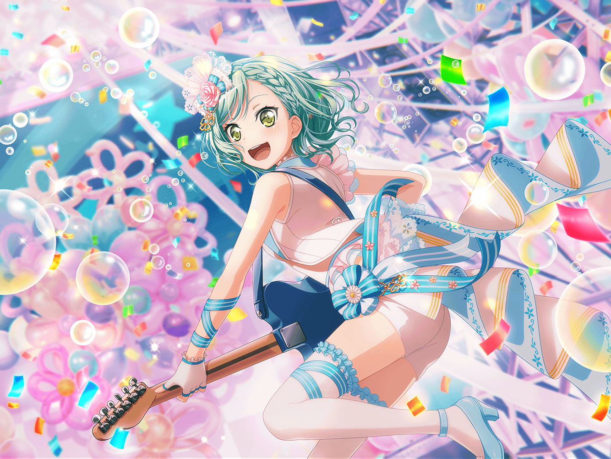
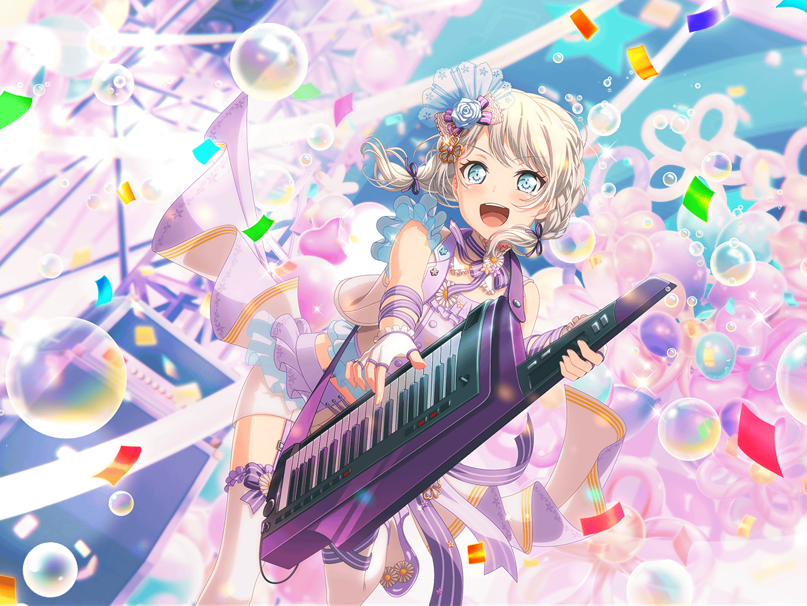
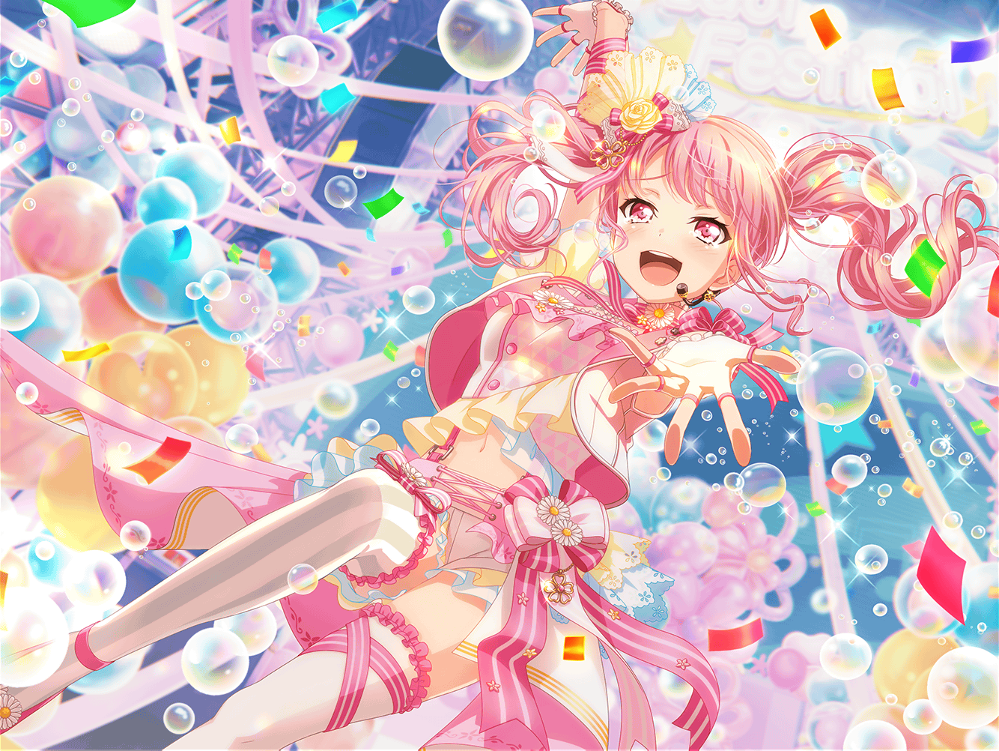

ライブ当日
楽屋
イヴ
私達の出番、あとどのくらいでしょうか？
日菜
次の次かな？ てか、イヴちゃん５分前も
その質問してたよー？
イヴ
はっ……そうでした……
千聖
イヴちゃん、緊張してる？
イヴ
はい……今回のライブは、いつも以上に大切ですから……
すごく緊張しています
千聖
そうね……今回は珍しく私も緊張してるわ
日菜
だいじょーぶだって。あんまりガチガチでやっても
いいことないよ。……ね、彩ちゃん！
彩
……うん。パスパレ、これからも続けたいもん
千聖
彩ちゃん……
彩
絶対、うまくいくよ。絶対……
日菜
ほら、彩ちゃんもこう言ってるんだし。ね？
スタッフ
Pastel＊Palettesさん！ そろそろ準備お願いしまーす！
イヴ
きたっ！
彩
……みんな。最高のライブにしよう
日菜・千聖・イヴ・麻弥
うんっ！
ええ！
はいっ！
ライブステージ
彩
みなさーん、こんにちはーっ！！！
せーのっ
一同
Pastel＊Palettesです！！
彩
最後まで、盛り上がっていきましょー！！
聴いてください！ 『Y.O.L.O!!!!!』
観客
おーっ！ １曲目からこれかーっ！！
観客
なんか今日のパスパレ、気合入ってるね！
彩
ありがとうございましたーっ！！！
続けて聴いていただきました。いかがでしたかー？
彩
……ありがとうございまーすっ！！
今日、こんなに大きなステージに立つことができて
とっても嬉しく思ってます
彩
本当に、ありがとうございますっ！！
彩
……えっと……
千聖
（あ……）
彩
その！ こ、これからも、Pastel＊Palettesを
よろしくお願いしますっ！！！！
観客
ん？ 急にどうしたんだろう
観客
彩ちゃん、緊張しちゃってるのかな？
日菜
ぷっ……あっはは！ そうそう、それでこそ彩ちゃん！
みんなー、パスパレはまだまだ続いていくから、
ずーーーーっと、よろしくねー！
千聖
今日、今、ここでファンになってくださった方も、
ずっと応援してくださっている方も、これからもずっとずっと
よろしくお願いします♪
彩
……それじゃあ、次が最後の曲になりますっ！
今はまだ、届かないかもしれないけど……私達、
もっともっと光り輝く存在になっていきたいと思いますっ！
彩
聴いてください。
『もういちど ルミナス』

日菜
（あたしとみんなは違う。だからこそ楽しい！ みんなが大好き！
でもさ……今この瞬間がすっごく楽しいって気持ち）
日菜
（これは、みんな同じだよね？ あははっ♪
『共感』って気持ち……またみんなに教えてもらっちゃった）
千聖
（つまらない人間だった私を、ここまで変えてくれたのは
間違いなくここにいるみんな……）
千聖
（色のない私に彩りを与えてくれたここがきっと、
私の原点……今ならそう思えそうな気がする。
――ありがとう）

イヴ
（やっぱり、みなさんが大好きです！ だからこそ
ずっとずっとこのまま演奏していたい！）
イヴ
（ブシに二言はなし！ これからも、私達は
パスパレですっ！！ パスパレは、永久不滅ですっ！！！）
麻弥
（アイドルってなんなのかジブンにはまだわからない。
どんなアイドルになれるのかも。でも……）
麻弥
（みなさんがいれば、きっと答えが見つかる！
答えのわからないものに向かって走っていく強さ……
それをくれたこの場所をずっとずっと、大切にしたい！）

彩
（バラバラで、めちゃくちゃなはじまりだった私達が、
同じ目標に、同じ気持ちで、同じ道を進んでるなんて……
昔の私に話したら、信じてくれるかな？）
彩
（……っ！ ダメだ、もう泣きそう）
彩
（パスパレが大好き。大切。みんなのことが大好き。
この気持ちがあれば、きっと何度だって立ち上がれる）
彩
（そうだよね、みんな――！）
楽屋
彩
はあ……はあ……
千聖
……
スタッフ
みなさん、お疲れ様ですっ！ 鬼気迫る、本当に素晴らしい
ステージでした！！ 今後は、やはりパスパレの活動を
主軸にして――
麻弥
……
イヴ
……しいです……
イヴ
悔しいです！！！！ 私、練習のときよりもうまく
できなくって……ううっ……ごめんなさい……
絶対絶対もっと、うまくできたはずですっ！
彩
……っ ううっ……！ 私も……悔しい……！
MCだって、歌だって、絶対もっと……ううっ……！
日菜
あははっ！ やっぱりパスパレって面白い！！
できないことって、楽しいよ！
パスパレ、こんなもんじゃないってことだよね！
千聖
ふふ……これじゃ、最高のステージにしようなんて、
目標とは言えないわね……
麻弥
はい……っ！ それは、ジブン達の『夢』です……！
彩
私達の……パスパレの夢。
みんなで、叶えようね……絶対！
彩
この先もずっと、
私達五人で最高のステージを目指していこうね——！